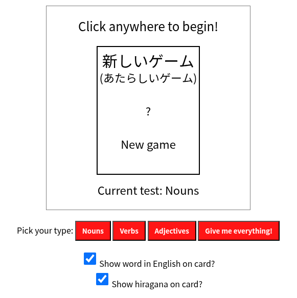
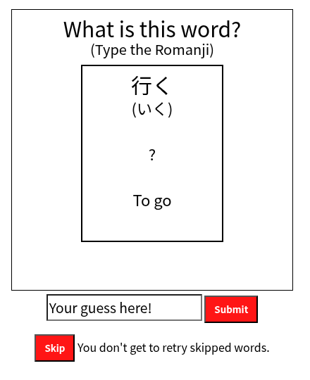
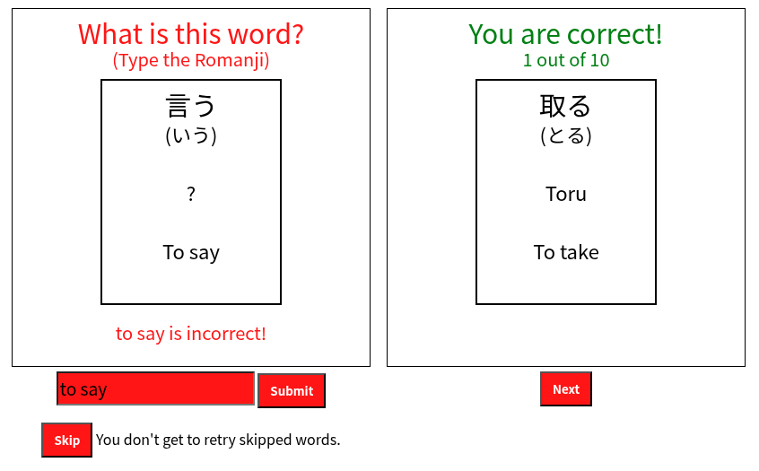
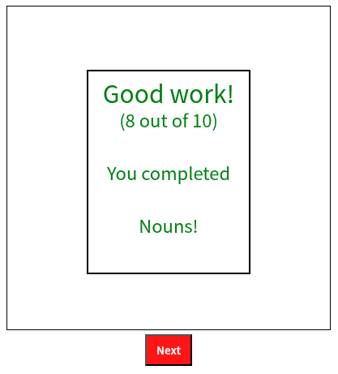

JP30Words
Japanese language learning.
Introduction
So you want to learn Japanese words? JP30Words is a resource and test for getting started on that journey.
For myself as a Japanese learner: It was difficult to find a path of what to do. Many websites, including some I will be linking here, have courses they are trying to sell. In reality, from my experience as a Japanese learner. There is no one way to approach the problem of language learning, no special method, and what people are often selling are potential time savers and directions for particularly busy people.
When I first started learning, I followed Tofugu’s guide for Japanese’s two phonetic scripts Hiragana and Katakana.
They prioritize mnemonics, which to summarized for the sake of brevity, in this context, is helping you recall the characters and their associated sounds with stories. I would recommend following the first guide on Hiragana before continuing. The test uses Romanji for typing in the sounds of the characters like the Tofugu tests do.
I’d recommend looking into Hiragana/Katakana writing after you do the reading practice for both. Tofugu’s advice on this was useful, but I do enjoy writing and it helps things stick for me. I do similar with Kanji where I learn it from a resource like Remembering the Kanji by James Heisig and enhance memorization with the joy of writing the characters.
Below are three sections with 10 words each, each set has its own test, and one test all together. I recommend taking breaks, then when you comeback do the test before reviewing materials again. This is to see how well you can recall. Then look at the materials after trying your best and skipping difficult words. Noting the difficult cards to work on as part of your study. This technique is called spaced repitition and it has more nuances that smarter people than I have described like in the linked e-student article by Sander Tamm.
First there is a handful of expressions to give a little perspective about how the tables are layout out that will NOT be on the test.
Expressions
| Word (Japanese) |
Word (Romanized) |
Definition | Source |
|---|---|---|---|
| 初めまして (はじめまして) |
Hajimemashite Nice to meet you. |
Nice to meet you; I'm glad to make your acquaintance; how do you do? | Jisho |
| お早うございます (おはようございます) |
Ohayougozaimasu Good morning. |
Good morning | Jisho |
| 今晩は (こんばんわ) |
Konbanwa Good evening. |
Good evening | Jisho |
| 行ってきます いってきます |
Ittekimasu I'm off |
I'm off (and will be back later); see you later | Jisho |
| ただいま帰りました (ただいまかえりました) |
Tadaimakaerimashita I'm home! |
I'm home!; I'm back! | Jisho |
Another common phrase is just 元気（Genki） which is the inspiration of the name textbook series GENKI: An Integrated Course in Elementary Japanese.
Nouns
| Word (Japanese) |
Word (Romanized) |
Definition | Source |
|---|---|---|---|
| 学校 (がっこう) |
Gakkou School |
School | Jisho |
| 先生 (せんせい) |
Sensei Teacher |
Teacher; instructor; master | Jisho |
| 英語 (えいご) |
Eigo English |
English (language) | Jisho |
| 水 (みず) |
Mizu Water |
1. Water (esp. cool or cold) 2. Fluid (esp. in an animal tissue); liquid 3. Flood; floodwaters more |
Jisho |
| 川 (かわ) |
Kawa River |
River; stream | Jisho |
| 手 (て) |
Te Hand |
1. Hand; arm 2. Forepaw; foreleg 3. Handle 4. Hand; worker; help more |
Jisho |
| 仕事 (しごと) |
Shigoto Work |
Work; job; labor; labour; business; task; assignment; occupation; employment | Jisho |
| 年 (とし) |
Toshi Year |
Year | Jisho |
| 雨 (あめ) |
Ame Rain |
1. rain 2. rainy day; rainy weather |
Jisho |
| 時間 (じかん) |
Jikan Time |
1. time 2. hour 3. period; class; lesson |
Jisho |
Verbs
| Word (Japanese) |
Word (Romanized) |
Definition | Source |
|---|---|---|---|
| 話す (はなす) |
Hanasu To talk |
To talk; to speak; to converse; to chat | Jisho |
| 買う (かう) |
Kau To buy |
To buy; to purchase | Jisho |
| 読む (よむ) |
Yomu To read |
To read | Jisho |
| 出る でる |
Deru To leave |
To leave; to exit; to go out; to come out; to get out | Jisho |
| 取る とる |
Toru To take |
To take; to pick up; to grab; to catch; to hold | Jisho |
| 待つ まつ |
Matsu To wait |
To wait | Jisho |
| 行く いく |
Iku To go |
To go; to move (towards); to head (towards); to leave (for) | Jisho |
| 有る ある |
Aru To be |
To be; to exist; to live | Jisho |
| 言う いう |
Iu To say |
To say; to utter; to declare | Jisho |
| 見る みる |
Miru To see |
To see; to look; to watch; to view; to observe | Jisho |
Adjectives
| Word (Japanese) |
Word (Romanized) |
Definition | Source |
|---|---|---|---|
| 大きい (おおきい) |
Ookii Big |
1. Big; large; great 2. Loud 3. Extensive; spacious 4. Important; decisive; valuable more |
Jisho |
| 長い (ながい) |
Nagai Long |
1. Long (distance, length) 2. Long (time); protracted; prolonged |
Jisho |
| 高い (たかい) |
Takai Tall |
1. High; tall 2. Expensive; high-priced 3. High (level); above average (in degree, quality, etc.) more |
Jisho |
| 難しい (むずかしい) |
Muzukashii Difficult |
1. difficult; hard; troublesome; complicated; serious (disease, problem, etc.) 2. impossible; unfeasible more |
Jisho |
| 良い (よい) |
Yoi Good |
1. good; excellent; fine; nice; pleasant; agreeable 2. sufficient; enough; ready; prepared 3. profitable (deal, business offer, etc.); beneficial more |
Jisho |
| 新しい (あたらしい) |
Atarashii New |
New; novel; fresh; recent; latest; up-to-date; modern | Jisho |
| 大変 (たいへん) |
Taihen Very |
1. Very; greatly; terribly; awfully 2. Immense; enormous; great more |
Jisho |
| 後ろ (うしろ) |
Ushiro Back |
Back; behind; rear | Jisho |
| 忙しい (いそがしい) |
Isogashii Busy |
Busy; occupied; hectic | Jisho |
| 可愛い (かわいい) |
Kawaii Cute |
Cute; adorable; charming; lovely; pretty | Jisho |
Flashcard Test
This is a short walkthrough of how the flash card word guessing game is played.

In the image above from the top, you can see the game window. Clicking anywhere starts the game and the current test is selected as 'Nouns'. Below is a row of buttons. Each are the types of words that will be randomly selected for you to guess. Below the buttons are checkboxes for advanced guessing. Unchecking English words is better for a learner that knows Hiragana, and unchecking Hiragana is for learners trying to remember the Kanji characters.

On the next screen after you click start, you will be prompted to input your answer in Romaji. (The Japanese phonetic sounds with latin characters.) When you submit it will check to see if you got it correct.

You will be notified if the result is incorrect. You can try as many times are you like. If you are stuck you can click the 'skip' button. Resulting in a lost point. (You can always try the word again next time!) If you get it right, you will be notified and give your next card after clicking 'next'. If you are lost as to why the second one was right. 'Toru' was input as the correct answer. 'To' and 'ru' are latin characters that are the equivalent to と and る.
Note: The input isn't case sensitive.

Once all words of a given catagory (or every catagory with 'everything') have been answered or skipped. You are given a score. 'Next' brings you back to the first screen.
Resources
There are some resources that I found useful for Japanese learning that you might find useful in your journey aswell.
- Tofoku Hiragana - Useful guide to learn and remember the Hiragana.
- Tofoku Katakana - Similar as above, but for Katakana.
- Anki - A flashcard program that runs locally on your computer or mobile device. Big inspiration for the test. Runs user generated decks for memorization with spaced repitition.
- WaniKani(Paid with free initial courses) - Though it costs money, it wasn't that bad in terms of being ready built flashcards. In my opinion, it stretches the mnemonics method past what was reasonable for me to recall.
- Tadoku - Free books from Tadoku. I've read some of these myself and I like they have very basic books for beginners. You don't necessarily have to go with their method. (Which paraphrased, is reading without looking up a dictionary.) But give it a try and see if that clicks for you.
- Yomitan - Super useful extension that let's you select Japanese text and it will fetch dicionary entries near your cursor. Takes some setup, but well worth it for readers.